SmithPiano
Piano technical & musical services in New England for over 25 years.
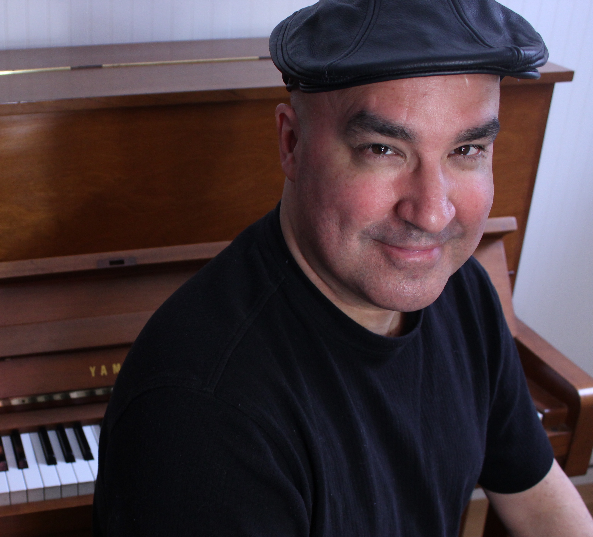

 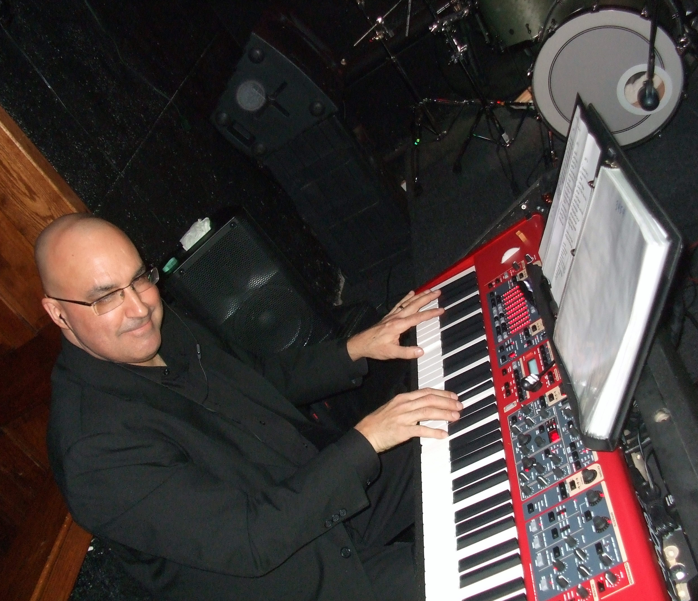
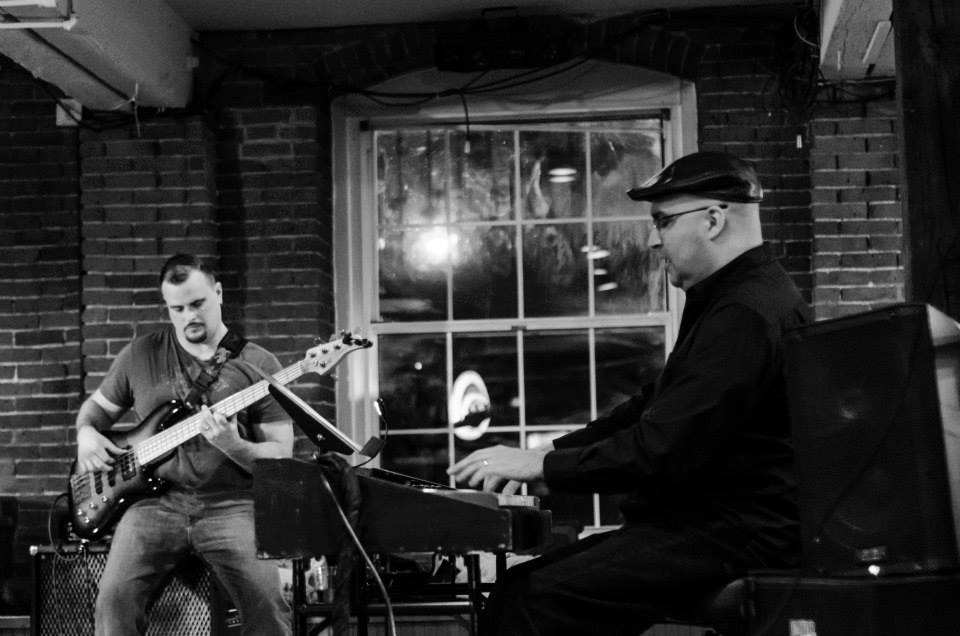
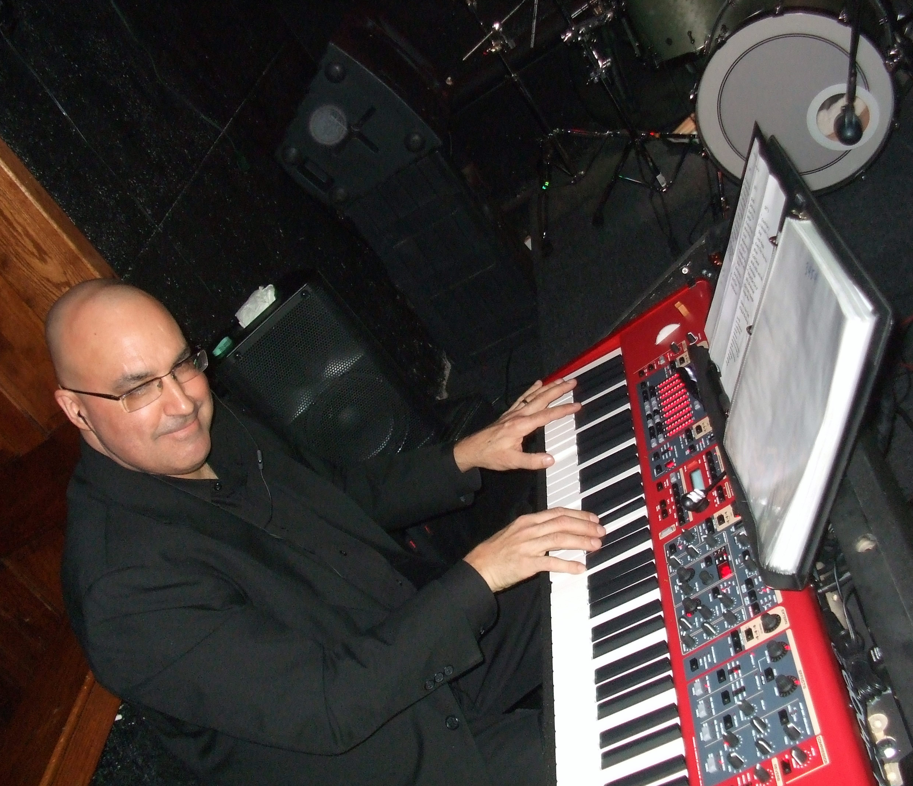
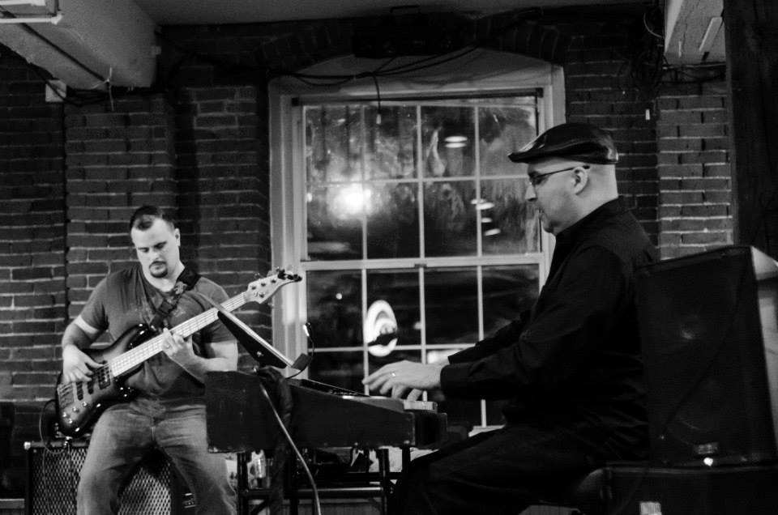
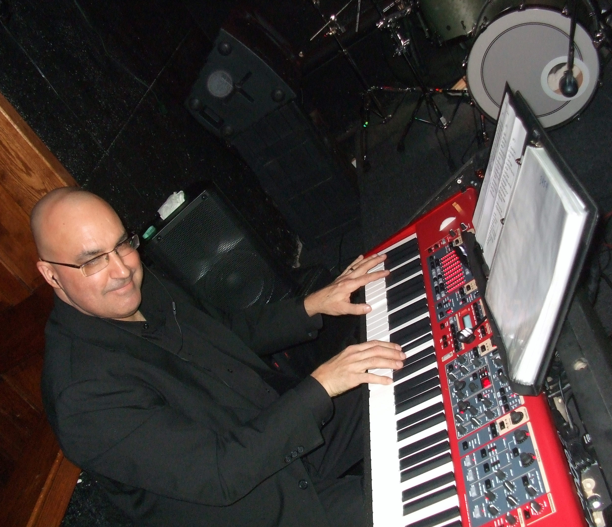
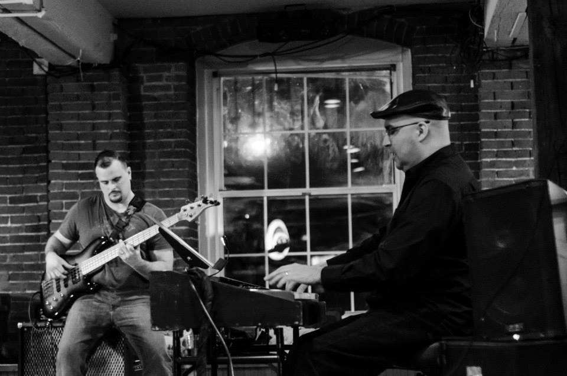
Brad Smith
Pianist, Keyboardist, Accompanist, Musical DirectorAcoustic & Electric Jazz - Funk - World Music - Improvisation
Standards - Straight Ahead - Original Projects - Live Performance
Latin Trio playlist
Jazz Piano Trio playlist
Solo Jazz Piano playlist
EDUCATION
Private lessons in Jazz Improvisation with Charlie Banacos, Boston, MA 1988-1990Classical Piano & Weight Technique with Kathy Rand, Boston Conservatory, 1987-1989
B.A. Degree Piano Performance, Berklee College of Music, Boston, MA, 1985
Jazz piano and improvisation with Mike Marra, Boston, MA 1984-1985
Master class and private lessons with pianist Ken Werner, Boston, MA 1984
Classical piano with Dr. George Mulder, Interlochen Arts Academy, Interlochen, Michigan 1973-1977
EXPERIENCE
Pianist with Sabor Picante, Salsa y Latin Jazz, 2012-2016Pianist with Carlos Torres' Mambo Magic, Festival Betances, Boston 2016
Accompanist for Royal Carribean Cruise Lines, Boston auditions, Summer 2016
Pianist with Camelia Latin Jazz Quintet, Festival Betances, Boston 2015
Accompanist with classical virtuoso bassist Gary Karr, NH Bass Fest 2015
Duo, trio & quartet performances with jazz bass legend Eddie Gomez, NH Bass Fest 2015
Pianist with Afrika Gente, afro-Latin jazz, various performances 2015-16
Duo with African drummer Cornell Coley (Afrika Gente leader) 2015-16
Pianist with Willie Cotto y Orquesta Unicason, Worcester, MA 2014
Pianist with Salsa singer Van Lester at Boston Puerto Rican Festival 2014
Pianist with Rafael Muriel Salsa Grupo at Festival Betances, Boston 2014
Pianist with Sabor Picante, Festival Betances, Boston, 2014
Keys & keyboard bass with Dominique Dinardo & Reid Trevaskas, N’awlins, Manchester, NH 2013-2014
Keyboardist with Manchuka 10 piece funk dance band 2009 & 2014
Jazz piano and keyboards with Stan Johnson, Chops Turner and Lori Dow, Boston, MA 2012-2014
Jazz piano and organ with Don Altobello Jazz Sextet, Boston, MA 2012-2014
Jazz piano with Richard Hale Shaw & Jazz Continuum, Boston MA 2012-2014
Jazz piano with Bopkick Jazz Quartet, Boston area 2009-2014
Pianist with Salsa artists Jose Salgado & Gilberto Rivera’s Rhumbanama, Lowell Puerto Rican Festival 2013
Keyboards with Sweet Willie D, swing, gospel, Blues & Soul quintet, Boston, MA 2013
Keyboards and Keys Bass with Bees Deluxe, blues-funk-rock trio, Boston, MA 2012-2013
Keyboards and Keyboard Bass with Jose Zayas and Fernanda Peirera, Worcester, MA 2012
Keyboards and Keyboard Bass with Roderick Camelia, Latin Jazz Trio, Boston area 2007-2011
Street Jazz & Latin Jazz performances with Brad Smith Trio in Boston area 2008-2016
Keyboards for Grupo Fantasia Salsa, Merengue, Bachata, Cha Cha, Latin Jazz, 2010
Accompanist for classical/sacred vocalists at Peterborough CS Church 2009-2011
BACKGROUND
Working pianist, since 1975 Age 13, When the band failed to show at the club where I washed dishes.Cover/Rock/Funk/Club Band “Sneaker” Gigged Around Northern Michigan, 1978-80
Pianist, Recorded With Chris Bickley Big Band, “Gonna Fly Now” In Imf – Ambisonic Format 1981
First Two Berklee Years, Studied With Dick Odgren, Mike Marra, Alex Elin, Bob Winter, Jeff Covell Started Apprenticeship
With Tom Sheehan, As Piano Technician At Berklee, 1981
Performed, Wrote & Arranged For Michigan Jazz Sextet, Equinox And Singer Robin Lee Berry 1982-1983
Instructor, Jazz Piano & Improvisation, Northwestern Michigan College 1983
Jazz Trio With Sky Elobar, Bass And Marcello Pelletieri, Drums, Boston, Ma 1984-1985
Music Therapist With Blind And Autistic Savant, Toren Hall, Mass Assoc. For The Blind 1985
Solo, Duo, Trio & Quartet Jazz Performances In Boston Clubs 1982-1993
Jazz Quartet With Mike Piepman, Trumpet Performed At Ryles, 1369 Club, Willow Jazz Club, 1985-1987
Cruise Ship House Band Pianist, With New Orleans Trumpeter Jamil Sharif, Premiere Cruise Lines 1988
Cruise Ship House Band Pianist, Princess Cruise Lines, Star Princess 1989
House Pianist, Ritz Hotel And Other Major Boston Hotels, For Curtis International Agency, Boston, Ma 1988-1992
Street Performing, Recording & Nyc Performances With French Singer, Gary Innocent 1986-1989
Pianist With Alphonse Villalong & The Cabaret Rose, 1989-1991
PERFORMED WITH
Stan Mark, Bruce Dunlap, Jamey Haddad, Skip Hadden, Jack Dryden, John Abercrombie, Donny Mccaslin, Tim Hagans, Bill Mobley, Ian Froman, Mark Pucci, Gene Jackson, Marcello Pelletieri, Alphonso Villalonga, Matt Wilson, Bob Nieske, David Clark, Jim Stinnett, Ratso Harris, Jamil Sharif, Jan Shapiro, Conrad Warre, Stan Johnson, Chops Turner, Gary Karr, Eddie Gomez
RECORDINGS
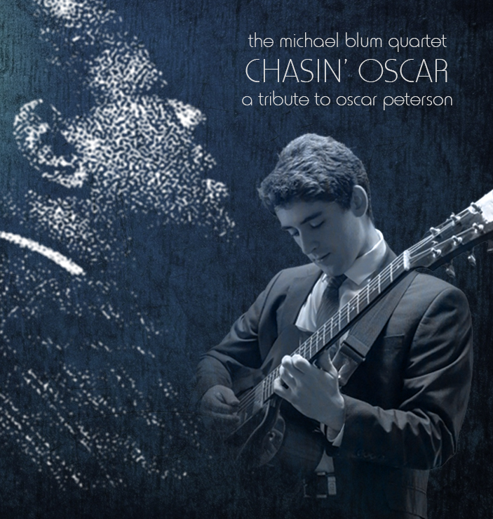 "Chasin' Oscar" June 2015Michael Blum Quartet
Michael Blum, Guitar Jim Stinnett, bass Dom Moio, drums Brad Smith Piano Recorded at Jon Chase Studio 2015
 “Commitment” January 2015
“Commitment” January 2015
DOWNBEAT MAGAZINE 2015 “RISING STAR” Michael Blum Quartet
Michael Blum, Guitar Jim Stinnett, bass Dom Moio, drums Brad Smith Piano Recorded at Jon Chase Studio 2015
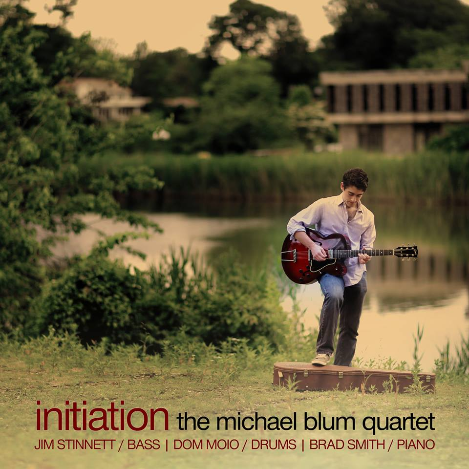 “Initiation” 2014
Michael Blum Quartet
Michael Blum, Guitar Jim Stinnett, bass Dom Moio, drums Brad Smith Piano Recorded at Jon Chase Studio 2014 See review of this album in the November 2014 issue of DownBeat
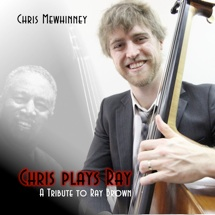 “Chris Plays Ray” 2013
Chris Mewhinney Quartet/Quintet/Trio
Chris Mewhinney, bass Jim Stinnett, bass Dom Moio, drums Michael Blum, guitar Brad Smith, piano Recorded at Jon Chase Studio 2013
 “Live Evil” Bees Deluxe 2013
“Live Evil” Bees Deluxe 2013
Bees Deluxe (acid blues)
Conrad Warre, guitar/vocal Brad Smith, keys/bass Patrick Sanders, drums Recorded live at “The Grog” Newburyport, MA 2013
 “Take My Love” 1996
“Take My Love” 1996
Simone Waddel
Drums: Charles Haynes Bass: Jim Stinnett Guitar: Marco Abreu & Tony Fesmire Backing Vocals: Dennis Montgomery Piano: Germaine Nelson Piano & Keyboards: Brad Smith
 “At The Edge”, Independent 1990
“At The Edge”, Independent 1990
Alfonso Villalonga & The Cabaret Rose
Alan Bern (accordion), Bob Nieske (bass), Matt Wilson (drums), Johaness Ammon (violin), Jeff Warschauer (mandolin), Bryndis Baldursson (cello), Cece Giannotti (guitar), Dr No (drums), Roy Okutani (trumpet), Billy Novick (clarinet), Curtis Hasselbrink (trombone), Bevan Manson and Brad Smith (piano)
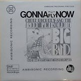 “Gonna Fly Now” IMF – Ambisonic format 1981
Reef Petroleum Big Band